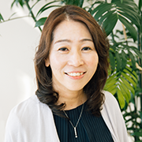
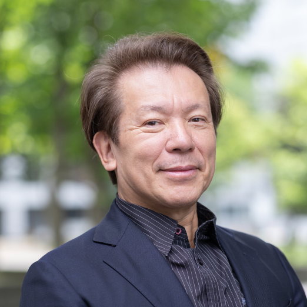
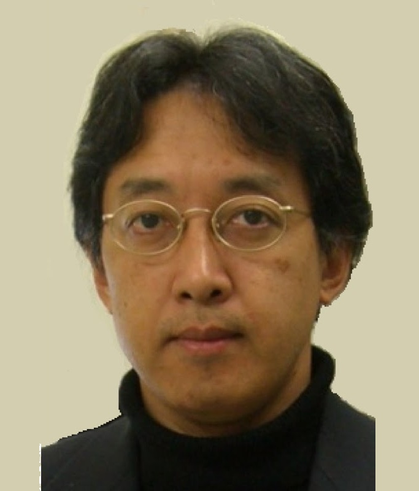
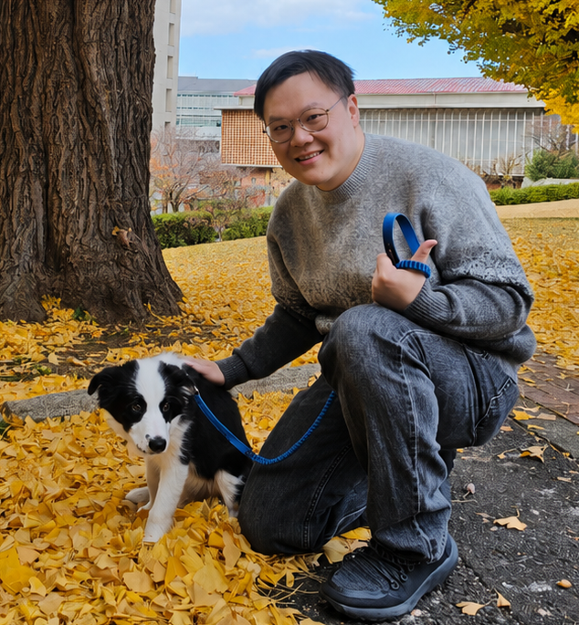
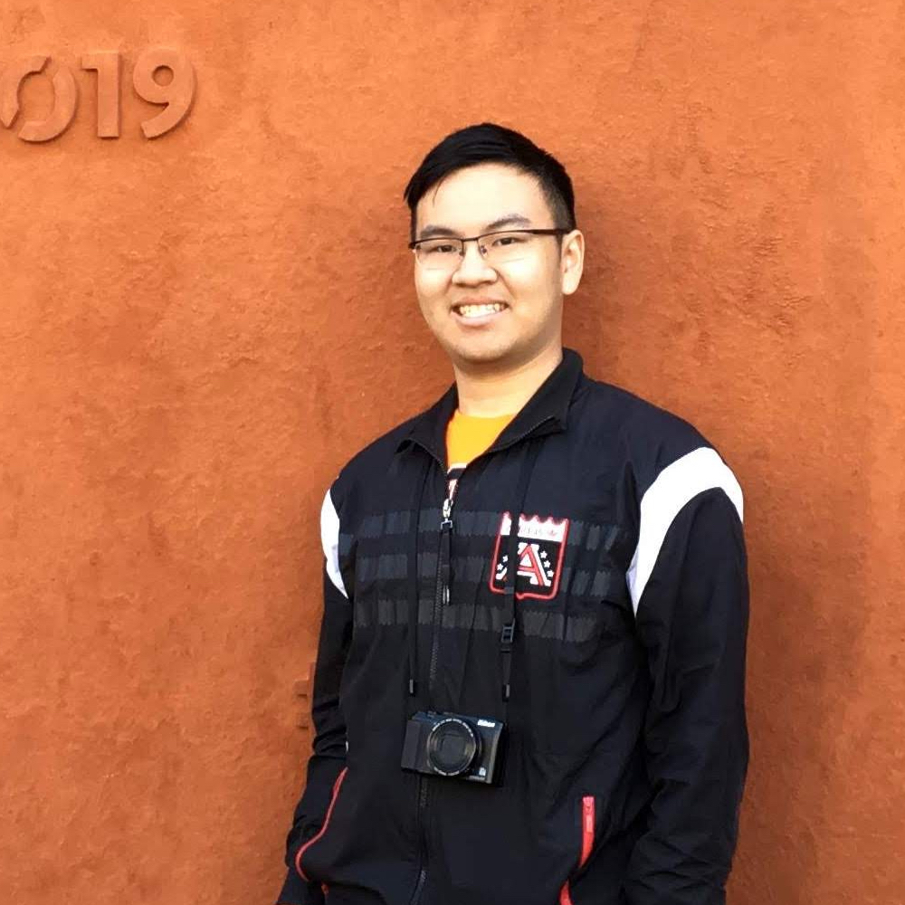

Speakers
Keynote speakers


Keynote titles and abstracts will be announced.
Program
All times are local to Shanghai (UTC+8).
October 15 Thursday · Excursion & networking
- 10:00–11:00
Introduction & Networking
- 11:00–12:00
Group Assembly & Transportation
- 13:00–17:30
Excursion
- 18:30–21:00
Welcome Dinner & Networking
October 16 Friday · Symposium
- 09:00–09:30
- 09:30–09:50
Science Tokyo Interactive Intelligence Lab Introduction
Erwin Wu · Institute of Science Tokyo - 10:00–10:20
Alaya Lab Introduction
Kaipeng Zhang · Alaya Lab - 10:30–11:30
Alaya Lab Research Presentations
Intern Students · Alaya Lab
- 11:30–13:30
Lunch Break
- 13:30–14:00
Intelligence Lab Research Presentations
Yichen Peng · Institute of Science Tokyo - 14:10–14:45
- 14:50–15:25
Keynote 2
Hideo Saito · Keio University - 15:25–15:55
Coffee Break
- 16:00–16:35
Keynote 3
Satoshi Nakamura · CUHK-Shenzhen - 16:40–17:15
Keynote 4
Shigeo Morishima · Waseda University - 17:20–17:30
Closing
Bo Zheng · Alaya Lab
Organizers
Science Tokyo Organizers




Alaya Lab Organizers